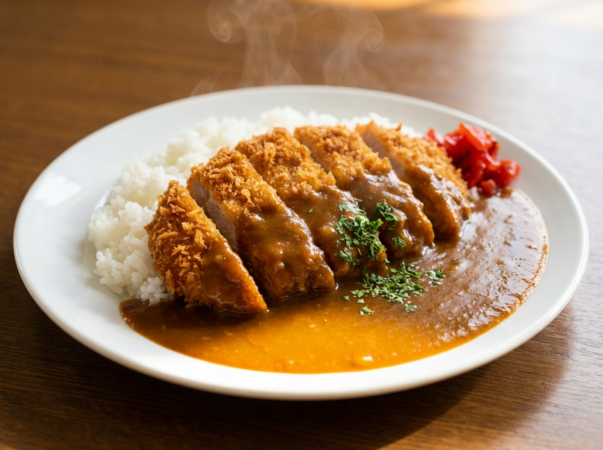

カツカレー

この料理について
サクサクのとんかつに、じっくり煮込んだカレーをかけた定番メニューです。
ボリュームがあり、がっつり食べたいときにぴったりの一皿です。
材料
- ご飯
- 市販のカレールー
- 玉ねぎ
- にんじん
- じゃがいも
- 豚ロース肉（とんかつ用）
- 福神漬け（お好みで）
作り方
- 玉ねぎ・にんじん・じゃがいもを切る。
- 鍋で野菜を炒め、水を加えてやわらかくなるまで煮る。
- 火を止めてカレールーを溶かし、再び弱火でとろみがつくまで煮込む。
- とんかつを揚げ、食べやすい大きさに切る
- 皿にご飯を盛り、とんかつをのせてカレーをかけ、福神漬けを添える。
ホーム